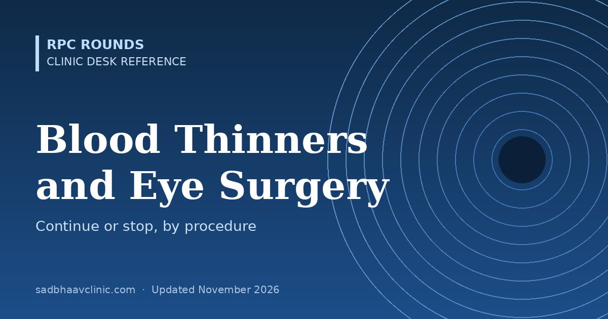
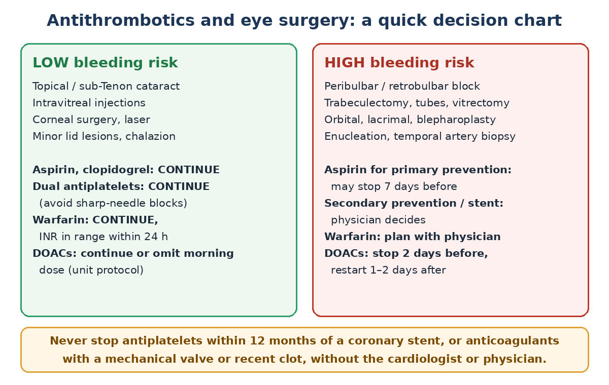

Last updated: November 2026
"Should I stop the aspirin?" is one of the commonest questions in the eye OPD. For most eye operations the answer is no: the risk of a stroke, heart attack or stent thrombosis from stopping is far greater than the risk of bleeding in the eye. This page sets out a practical approach by drug and by procedure.

| Bleeding risk | Procedures |
|---|---|
| Low | Cataract surgery under topical or sub-Tenon anaesthesia; intravitreal injections; corneal surgery; minor lid procedures (chalazion, cyst, lesion biopsy anterior to the septum); strabismus surgery (low to moderate); laser procedures |
| High | Any surgery under peribulbar or retrobulbar (sharp-needle) block; trabeculectomy and tube surgery; vitrectomy (especially with neovascular disease); orbital surgery and anything behind the orbital septum; blepharoplasty; DCR and lacrimal surgery; enucleation and evisceration; intraocular tumour surgery; temporal artery biopsy |
| Drug | Low-risk procedure | High-risk procedure |
|---|---|---|
| Aspirin (alone) | Continue | Continue if for secondary prevention (previous MI, stroke, stent, PAD). If for primary prevention only, it can usually be stopped 7 days before. |
| Clopidogrel (alone) | Continue | As for aspirin; if stopped, 7 days before. Discuss with the physician. |
| Dual antiplatelet therapy (aspirin + clopidogrel, prasugrel or ticagrelor) | Continue. Avoid sharp-needle blocks: use topical or sub-Tenon anaesthesia. | Defer elective surgery until DAPT is completed (usually 6–12 months after a stent). If surgery cannot wait, the cardiologist decides whether the P2Y12 drug can be paused (clopidogrel and ticagrelor 5–7 days, prasugrel 7 days) while aspirin continues. |
| Warfarin | Continue. Check INR within 24 hours before surgery; proceed if within the patient's therapeutic range (usually 2.0–3.0). Defer if above range. | Plan with the physician or anticoagulation clinic: stopping 5 days before, with bridging for high thrombotic risk (mechanical mitral valve, recent clot). Check INR on the day. |
| DOACs (apixaban, rivaroxaban, dabigatran, edoxaban) | Many units continue them for topical or sub-Tenon cataract and injections; others omit the dose on the morning of surgery. A 2019 review suggested a 2-day pause; follow your unit protocol. | Stop 2 days before (longer if kidney function is reduced, especially for dabigatran); restart 1–2 days after surgery once there is no bleeding. No bridging is needed. |
| Heparins (LMWH for prophylaxis or bridging) | Continue prophylactic doses | Omit the dose before surgery as advised by the physician |
| Supplements (fish oil, ginkgo, garlic, ginseng, vitamin E) | Continue | Consider stopping a week before; they add to bleeding risk |
Sudden pain, tense proptosis, tight lids, rising IOP and loss of vision after a block or orbital surgery. This is an emergency: perform lateral canthotomy and cantholysis without waiting for imaging if vision is threatened.
Where residents slip
Related: Cataract pre-op risk checklist, Medical fitness before eye surgery, Ocular anaesthesia.
📘 Want more exam-ready material? See Most Commons in Ophthalmology on Kindle, or browse all my books.
Looking for an eye specialist in Ahmedabad? Learn about our Eye Department or book a consultation with Dr. Dhaval Patel.